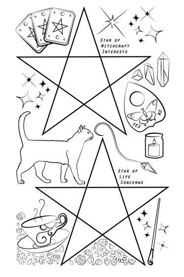

Ritual Grimoire
Double Decision Star
A self-reflection tool using two five-pointed stars to align your life concerns with your witchcraft interests. By mapping your priorities onto two stars and comparing them, you discover which magickal practices will benefit your actual life.
Quantities
- Paper or journal
- Pen or markers
- Two drawn five-pointed stars (or printed templates)
Directions
- Draw or print two five-pointed stars.
- Label the first one for life concerns and the second for witchcraft interests.
- For the life concerns star, write your top five life concerns around it, one at each point.
- These might include finances, health, relationships, career, family, stress, home, education, creativity, or any area where you want improvement.
- For the witchcraft interests star, write your top five witchcraft-related interests around it, one at each point.
- These might include herbalism, divination, spellcasting, energy work, spirit communication, astrology, crystals, ritual work, deity work, or any magickal topic that fascinates you.
- On each star arm, mark a dot to indicate your level of interest or concern.
- For high priority, place the dot near the center of the star.
- For low priority, place the dot near the outer point of the arm.
- Fill in the arm from the center to your dot.
- Compare your two completed stars.
- Notice which life concerns have dots closest to center (highest priority) and which witchcraft interests have dots closest to center (strongest fascination).
- Look for connections: how might your strongest witchcraft interests serve your most pressing life concerns?
- Choose one witchcraft interest that could address one life concern and start there.
- Find a book, join a group, take a class, or begin a practice that bridges the two.
- Return to your stars periodically, every few weeks, every season, or when life changes significantly.
- Priorities shift.
- New interests emerge.
- Keep your stars overlapping in ways that serve your life.

Why Five Points?
The five-pointed star honors the sacred number five—the pentacle's geometry that represents spirit presiding over the four elements. Five points also correspond to the five aspects of worldly desire: Health, Abundance, Comfort, Love, and Peace. By limiting yourself to five concerns and five interests, you force prioritization rather than trying to do everything at once.
Example: Sally
Sally is a thirty-eight-year-old single mom. Her Star of Life Concerns includes finances, healthy kiddos, stress reduction, home protection, and friends. When she examines her dots, the furthest-in points are finances and friends—kids come with surprise expenses, and friends are much-needed support.
Her Star of Witchcraft Interests includes ancestry and folklore, divination, spellcasting, spirit identification, and herbalism. Her furthest-in dots are spirit identification and herbalism.
She connects making friends and spirit identification by joining a paranormal investigation club. She's torn between spellcasting and herbalism, but knows herbalism can serve many needs. When the kids are with their dad, she starts by checking out digital herbalism books from her local library.
Example: Jimmy
Jimmy is a young man who has started his first adult job and moved into his first apartment. His Star of Life Concerns includes money, family and friends, education, love life, and fun. His centered dots are on love life and fun.
His Star of Witchcraft Interests includes energy work, ancestry and lore, spellcasting, alchemy, and goetia. His furthest-in points fall on energy work and ancestry and lore.
Since he isn't too worried about money, he signs up for reiki classes at his local Witch shop. He starts reading about his ancestry and decides to explore by attending local museum exhibits and lectures. As he attends these, he begins running into more and more attractive men.
When to Revisit
Revisit your stars every few weeks, every season, or when life changes significantly. Priorities shift. New interests emerge. Adjust your focus accordingly.